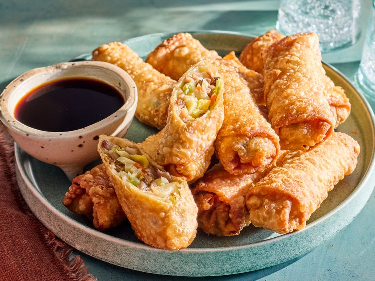

Chinese Egg roll

Description
This egg rolls recipe came from my mom who is the best cook ever! This recipe is very authentic because my family is Chinese and I am too. This recipe is at least 300 years old in the Ling family.
Ingredients
- 4 teaspoons vegetable oil, divided
- 3 large eggs, beaten
- 1 medium head cabbage, finely shredded
- ½ carrot, julienned
- 1 pound Chinese barbequed or roasted pork, cut into matchsticks
- 1 (8 ounce) can shredded bamboo shoots
- 1 cup dried, shredded wood ear mushroom, rehydrated
- 2 green onions, thinly sliced
- 2 ½ teaspoons soy sauce
- 1 teaspoon salt
- 1 teaspoon sugar
- ½ teaspoon monosodium glutamate (MSG)
- 1 (14 ounce) package egg roll wrappers
- 1 egg white, beaten
- 4 cups oil for frying, or as needed
Home